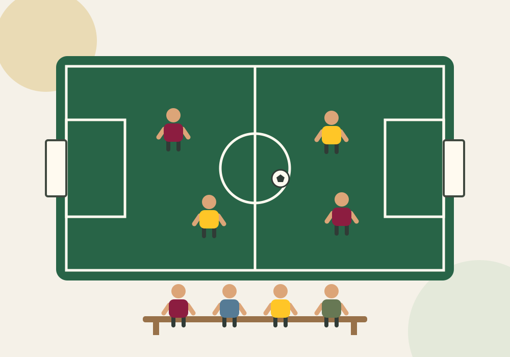

L2-L3 · Shared fields, shared connections

Every child deserves a safe place to play in their neighborhood.
Community connections can grow through ordinary, repeated encounters: learning a teammate's name, greeting another family, or helping put equipment away. Soccer gives those encounters a shared purpose. Players work toward a goal, while families and volunteers have opportunities to meet around the game. Returning to the same place gives people time to become familiar with one another.
The U.S. Soccer Foundation's Safe Places to Play program offers one example of designing for that connection. Its mini-pitches are hard-court spaces intended for organized soccer and pickup games. The Foundation describes them as community hubs and highlights features such as lighting, accessible gates, and benches as part of its approach to welcoming players and families.
For a neighborhood organizer, the everyday experience deserves attention. Can a first-time player find the schedule? Is there somewhere for a family member to sit? Does a newcomer know whom to approach? Clear information, thoughtful facilities, and a friendly introduction can help turn an available space into an inviting one. The field provides a meeting point; the people who welcome others help give that meeting point its character.
Shared responsibility can extend from the field to the sidelines. A volunteer might welcome new arrivals, organize equipment, or explain the schedule. A family member might help another family understand how to join. These contributions give people different ways to take part. Someone who is learning the game can still offer useful knowledge, time, or encouragement.
The atmosphere around competition also deserves care. Organizers can make their values visible by thanking helpers, explaining decisions, and encouraging respectful treatment of opponents. Clear expectations help newcomers understand how the group works. A successful afternoon can include a close match, a new introduction, and an invitation to return. For a community program, those relationships deserve attention alongside the final score.
L4-L5 · Making room for everyone
A welcoming invitation needs a practical path into the game. Organizers should explain costs, equipment needs, schedules, and registration clearly. Families also need a way to ask questions before committing. Reviewing these details helps a program identify where its invitation may be difficult to accept and where additional support could make a difference.
In Recreational Player Pathways , a presentation hosted by US Youth Soccer, Casey Mann describes recreational soccer as an entry point with no required tryouts. He also identifies shorter seasons, less travel, and volunteer coaches as typical features. This approach gives organizers a model for welcoming people who are beginning to explore the sport.
Supportive adults are another part of the experience. The U.S. Soccer Foundation's Soccer for Success program pairs soccer fundamentals with social, emotional, and life skills. Its coaches receive training as mentors. The program's approach shows how an organization can deliberately plan for encouragement and connection alongside instruction in the game.
Listening should continue after registration. Organizers can ask players what they enjoy, invite families to explain scheduling difficulties, and review whether newcomers receive enough guidance. Small adjustments can make an invitation easier to accept again. Clear volunteer roles also help people understand how their time will be used and whom to contact when they need support.
Neighbors who want to contribute can begin by contacting an existing community program. Ask about available volunteer roles, required training, equipment needs, or opportunities to help welcome participants. Choose a contribution that fits both the program's needs and the time you can reliably offer. Community soccer becomes a shared project through these everyday choices. The next connection may begin with a pass, a conversation, or someone making room for a newcomer.